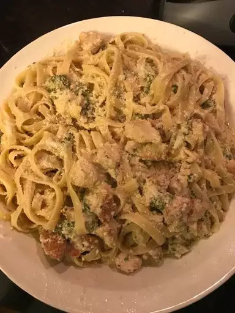

Fettuccine Alfredo

Description
I created this fettuccine Alfredo by modifying my mother's recipe. I get
nothing but rave reviews when I make this dish. My boyfriend is a
fettuccine Alfredo connoisseur, and he scrapes the pan every time. I must
warn you, this recipe is not for the health-conscious!
Ingredients
- 24 ounces dry fettuccine pasta
- 1 cup butter
- ¾ pint heavy cream
- salt and pepper to taste
- 1 dash garlic salt
- ¾ cup grated Romano cheese
- ½ cup grated Parmesan cheese
Steps
-
Bring a large pot of lightly salted water to a boil. Add fettuccine and
cook for 8 to 10 minutes or until al dente; drain.
-
Melt butter into cream in a large saucepan over low heat; add salt,
pepper, and garlic salt. Increase the heat to medium; stir in grated
Romano and Parmesan cheese until melted and sauce has thickened.
-
Deflate the dough and turn it out onto a lightly floured surface. Divide
the dough into two equal pieces. Roll dough out to half of its final
size. Let rest for 10 to 15 minutes (while you prepare desired pizza
toppings). Preheat oven to 450 degrees F (230 degrees C).
-
Add cooked pasta to sauce and toss until thoroughly coated; serve
immediately.
Back To Home